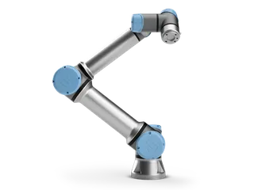
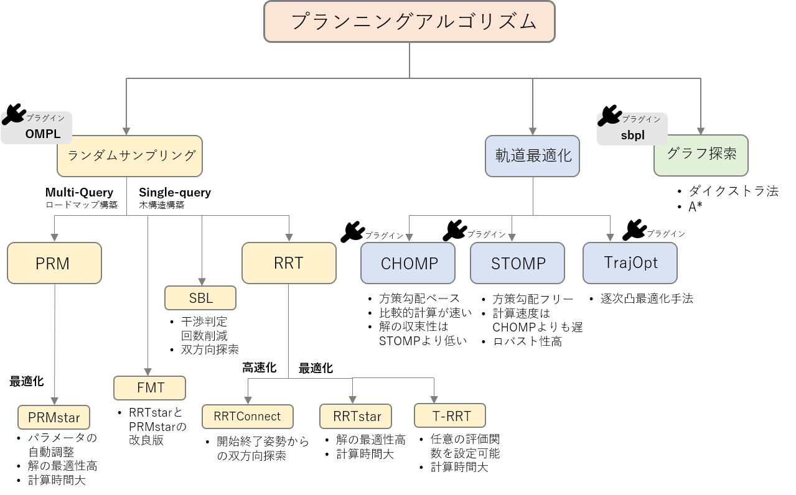
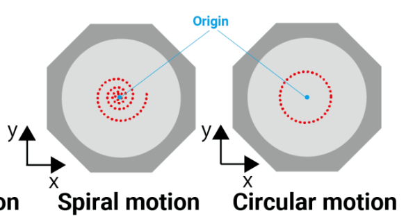
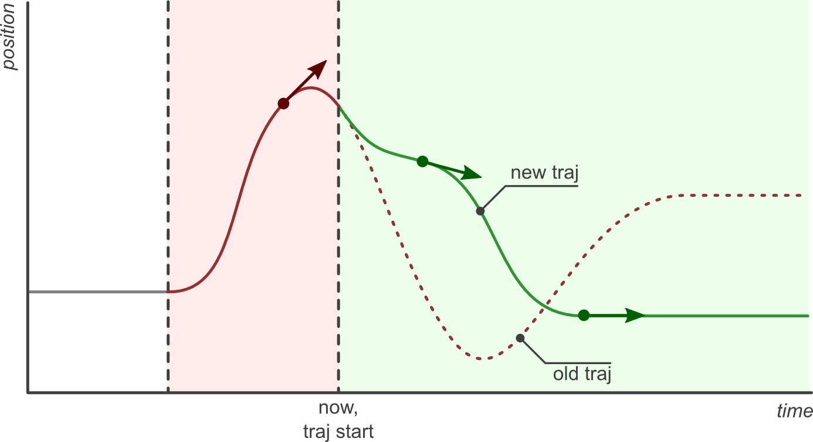
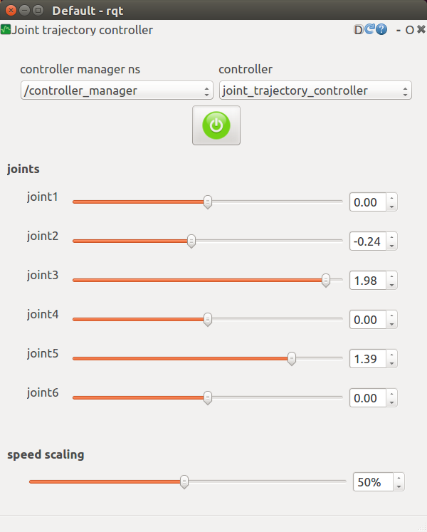
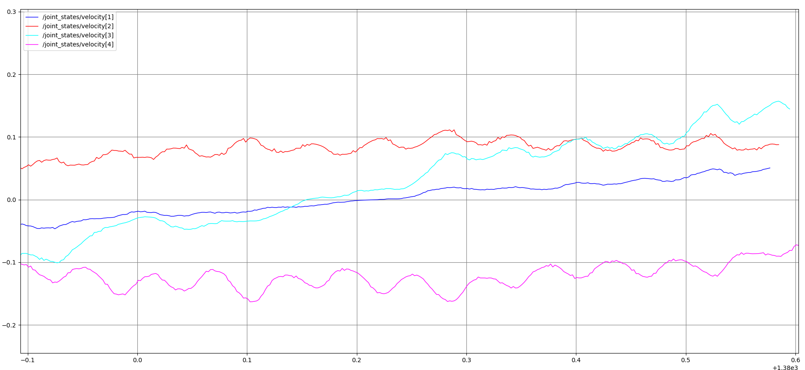
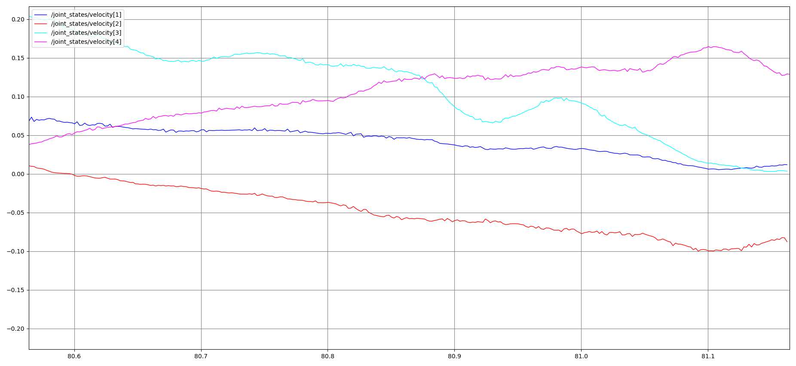
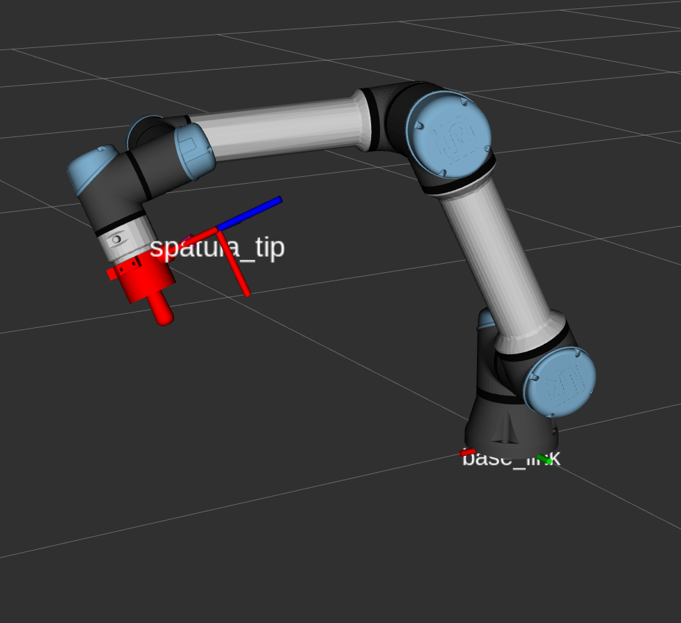

ゼロからのROS2
位置制御とモーションプランニング
大阪大学 中島優作
ロボット制御参考資料
本スライド(実践)、教科書(理論)の併用がおススメ

イラストが豊富で分かりやすいながらも基礎的な数式を扱っていて最初に読むのにちょうど良い
最も基本の位置制御まで扱っている

教科書「ロボット制御基礎論」を現在版にブラッシュアップ、理論的な詳しさと実装面までの手引きが充実
ROSを使う利点
ROS生成モーション
- PC上で完全に動作を計算してロボットに送る
- 0.1 mmくらい精密な動作をさせたいときはこっち
メーカー提供モーション
- ロボットコントローラでモーションを計算
- 複雑な動きを0.1mmくらい精密に動かすのは難しい
本スライドでは軌道制御の実装を扱います
- 実装方法1: MoveIt
障害物回避ありのモーションプランニング
ピッキングなどで便利 - 実装方法2: JointTrajectoryController
障害物回避なしのモーションプランニング
常に接触するタスクで便利
JointTrajectoryControllerってどういう意味？
ROSのコントローラの命名則↓
アーム制御則は組合せ
| ロボット関節の制御 | 指定したい座標系 | ユーザーが実現したい制御 |
|---|---|---|
| 位置 | 関節座標系 | 位置 |
| 速度 | 直交座標系 | 速度 |
| トルク | 力(トルク) |
ROSコントローラ命名則
position_controllers/JointTrajectoryController
よく使うROSの関節空間の
アームコントローラ
参考: joint_trajectory_controller.md
- position_controllers/JointTrajectoryController
- velocity_controllers/JointTrajectoryController
- effort_controllers/JointTrajectoryController
よく使うROSの直交空間の
アームコントローラ
position_controllers→velocity_controllersでも利用可能
- position_controllers/CartesianMotionController
- position_controllers/CartesianForceController
- position_controllers/CartesianComplianceController
市販だと位置/速度制御が多い

位置/速度制御
position_controllers, velocity_controllersのみ使用可
- Universal Robot
- DENSO
- その他多数
トルク制御できるロボットもある

トルク制御
effort_controllersも使用可
- Franka Robotics
- KUKA
MoveIt!を使うための準備
MoveIt!で使うコントローラ
JointTrajectoryController
- ROSを使ったロボットアーム制御で一般に使われるコントローラです
ScaledJointTrajectoryController
- URの速度スライダーに対応したUR専用コントローラ
- 例えば速度スライダーが1%の場合、これがないとROSは100%の速度で計算し制御がずれます
- URではデフォルトで使われます
xacroファイルの更新
起動用Launchの作成
ビルドと実行
- ビルドします
cd ~/ros2_ws
colcon build --symlink-install --packages-select ros_study
source install/setup.bash
ros2 launch ros_study ur5e_bringup_with_moveit.launch.py
ros2 run rqt_joint_trajectory_controller rqt_joint_trajectory_controller
GUIのスライダーを動かして、RViz上のロボットが動くことを確認できれば成功です。
MoveItによるアーム制御
MoveItとは
- 障害物を避ける動作を自動生成
MoveIt 3 Steps
- 目標姿勢を指定
- モーションプランニング
- 実行！
ステップ1:手先姿勢の表現
位置(position)+向き(orientation)=姿勢(pose)

- 位置：XYZで表す
- 向き：オイラー角 or クオータニオン
- ROSでは内部計算でクオータニオンを使う
実用上は最初と最後の姿勢をオイラー角で指定、クオータニオンに変換後に補完してROSに渡す
オイラー角による表現と課題
- 利点
- 直観的
- 3つの角度（Roll, Pitch, Yaw）で表現
- 課題
- ジンバルロックを避ける必要
- 軌道補間で不自然な動きになることがある
クォータニオンによる表現
- 利点
- ジンバルロックが発生しない
- 回転軸と回転角で表現
- 数値的に安定
- 課題
- 直観的理解が困難
- 4つの要素（w, x, y, z）で表現
- 正規化が必要
クォータニオン補間の利点
- SLERP (Spherical Linear Interpolation)
- 球面上の最短経路で補間
- 角速度が一定
- 滑らかな軌道生成
- オイラー角補間との比較
- より自然な回転軌道
- ジンバルロック回避
- 計算効率が良い
クォータニオンを扱う方法
- TF
- ROS標準
- ROS専用の型を使えるのが便利
- Scipy Rotation
- ROS不要でクオータニオンの計算が可能
- SLERPもあるので僕はよく使う
姿勢の表現 - オススメの実装
- 最初と最後の姿勢は直観的にわかりやすいオイラー角で指定
- 最初→最後の間のwaypointsの計算ではオイラー角→クォータニオンに変換してSlerpで補完
- ROSはクオータニオンしか扱えない点に注意
Step2:モーションプランニング

MoveItで使える手法一覧
https://opensource-robotics.tokyo.jp/?p=4313
- 産業用モーション(PTP,LIN,CIRC)
- Pilz Industrial Motion Planner
- サンプリングベース
- OMPLの中の手法
- 最適化ベース
- CHOMP
- STOMP
サンプリングベースの手法(RRT)
MoveItのデフォルト
- ランダムにパスを伸ばして障害物がなかったら採用、を繰り返す
- 実際は後処理をかけてスムーズに
- スタートとゴールから同時に伸ばし収束性を良くしたRRT Connectが使われる
最適化ベースの手法(CHOMP)
- コスト：障害物の距離を遠く、軌道の距離を短く、など
- 最適化：勾配降下法
- コストの設計と初期軌道の引きの良さによって収束時間や得られた軌道の良しあしが決まる
- 障害物が多い実用場面では正直使いにくい
最適化ベースの手法(STOMP)
- コスト：障害物の距離を遠くなど
- 最適化：確率的最適化
- 軌道は最適化で決めるけど、最適化はサンプリングベースというハイブリッドっぽい
- 滑らかさはCHOMPより劣るが解が収束しやすく実用上は使いやすい
MoveItCommanderによる実装
JointTrajectoryControllerによるアーム制御の基本
JTCの実装4ステップ
- 手先のwaypoints決定
- 逆運動学
- 軌道・軌跡生成
- 実行
step1:waypoimtsの計算

- 位置とクオータニオンの7次元を並べてwaypointsを作成
- クオータニオンのSlerpを活用すると動作が滑らかになる
- 詳しくはMoveItのスライドを確認
step2:逆運動学(IK)

XYZでロボットの手先姿勢を指定したい
ただ、動かせるのはロボットの関節
そこで手先姿勢→ロボットの関節の計算をする(逆運動学,IK=InverseKinematics)
逆運動学の解き方(IKソルバー)
- 解析解
- 特定のロボット構造に基づいた数式
- 関節角度を直接計算
- 数値解
- 最適化計算による近似解法
- 左のアプリのように徐々に近づける
現在は汎用性が高く速度も精度も十分になったので数値解を使うことが多い
MoveItのIKソルバー
MoveItのIKソルバー(ROS Service)だけ使用可能
通信時間がかかるので数点のIKなら実用的
Pythonで使えるIKソルバー
大量のIKはIk用ライブラリを直接使うのが良い
実際に使われている手法を紹介
- TRACK-IK-PYTHON(オススメ) - MoveItでも使われている手法, 安定性と計算速度のバランスが良い
- Pinocchio - 最先端の剛体アルゴリズムを実装したライブラリ, Franka Roboticsのライブラリでデフォルト
軌跡・軌道生成
- 軌跡：逆運動学で得た解, 時間情報なし
- 軌道：時間情報を加えたもの
- JointTrajectoryControllerでは、少なくともPositionとTimeFromStartを渡すと軌道計算と実行が可能
- 振動を抑える場合は厳密な速度, 加速度が必要だが、実用上はpositionだけでも問題ないことも多い
※軌跡と軌道の言葉の定義は「実践 ロボット制御」での定義を使っています
JointTrajectoryの送信方法
- Topic or Actionで軌跡(JointTrajectory)を送信し実行
- Topic
- /joint_trajectory_controller_name/commandに送信
- 送ったら直ちに動作を実行、途中で止められない
- Action
- /joint_trajectory_controller_name/FollowJointTrajectoryに送信
- 目標到達までの状態確認や途中変更も可能
Actionで送った場合の利点

参考資料: joint_trajectory_controller.md
- 途中でキャンセルしたり、軌道を変更して滑らかに繋ぐことができる
- 即時に反映したいとき以外は基本的にActionを使うべき
JointTrajectoryControllerのテスト方法

- rqt_joint_trajectory_controller_guiが便利
- JointTrajectoryControllerが正常に動いているのかをテストするときなどに使える
JTCの実装例
| 目標姿勢の決定 | ：Scipy Rotation Module |
| 逆運動学 | ：MoveIt IK Solver(TrackIK) |
| 軌道生成 | ：JointTrajectoryController |
| 軌跡生成 | ：JointTrajectoryController |
| 実行 | ：JointTrajectoryController |
JointTrajectoryControllerの実装
関節を指定して補間するだけのシンプルなデモ
JTC + IKの実装
JointTrajectoryControllerの設定例
JointTrajectoryControllerによるアームの速度・加速度制御
速度・加速度制御は必要か？
ここまで紹介した手法の課題
- 急加速、急減速
- 動作に振動が出やすい
軌道補間の方法
主な補間方法
- 線形補間 - 最も単純
- 3次スプライン - 滑らかな位置と速度
- 5次スプライン - 滑らかな位置、速度、加速度
- 台形 - 動作が速い
※教科書で出てくる時間多項式とスプラインは等価です
2点→時間多項式, 複数点→スプラインという違いです
補間方法の比較まとめ
| 補間方法 | 計算コスト | 滑らかさ | 連続性 | 適用場面 |
|---|---|---|---|---|
| 線形補間 | 低 | 低 | C⁰ | 高速動作・簡単制御 |
| 3次スプライン | 中 | 中 | C¹ | 一般的なロボット制御 |
| 5次スプライン | 高 | 高 | C² | 高精度作業・振動抑制 |
| 台形補間 | 低 | 中 | C⁰ | 高速動作・効率重視 |
迷った場合は3次スプラインが無難
関節速度計算はなくても良い

waypointsが少ないと波打つ

waypointsを増やす滑らか
- 2点であれば「速度 and/or 加速度を0」
- 3点以上であっても十分細かいwaypointsをとれば「速度 and/or 加速度を0」でも割となめらか
それでも厳密な速度計算が必要という方は↓
関節速度の計算方法
ヤコビアンとは
- 関節角度変化と手先位置変化の関係を表す行列
- 微分の連鎖律から導出
- 速度の関係式：v = J * q̇
物理的意味
- v: 手先速度ベクトル（6次元）
- J: ヤコビアン行列（6×n）
- q̇: 関節角速度ベクトル（n次元）
逆ヤコビアンによる手先速度の計算
逆ヤコビアンの計算
- 目標：手先速度 → 関節速度
- 式：q̇ = J⁻¹ * v
- 問題：Jが正方行列でない場合
解決方法
- 疑似逆行列：J⁺ = Jᵀ(JJᵀ)⁻¹
- 特異点対策：Damped Least Squares
- 冗長性解決：Null Space制御
waypointsの表示
デバッグ用にwaypointsを表示したいことはよくある、方法を紹介
VisualizationMarkerを使った表示
TFを使った表示
TFについて
- TF = Transformの略
- ROS標準搭載のシステムで、座標変換と座標管理の2つの機能がある
- 実装においてTFというと、実際は改良版のTF2のことを指す
機能1：座標変換


- ここではTCPの座標変換を示したが、TFで管理された座標系であれば任意の座標変換が可能
座標変換の仕組み

- TFはツリー構造になっている
- 同姿変換行列で順々にツリーを辿って座標変換を計算